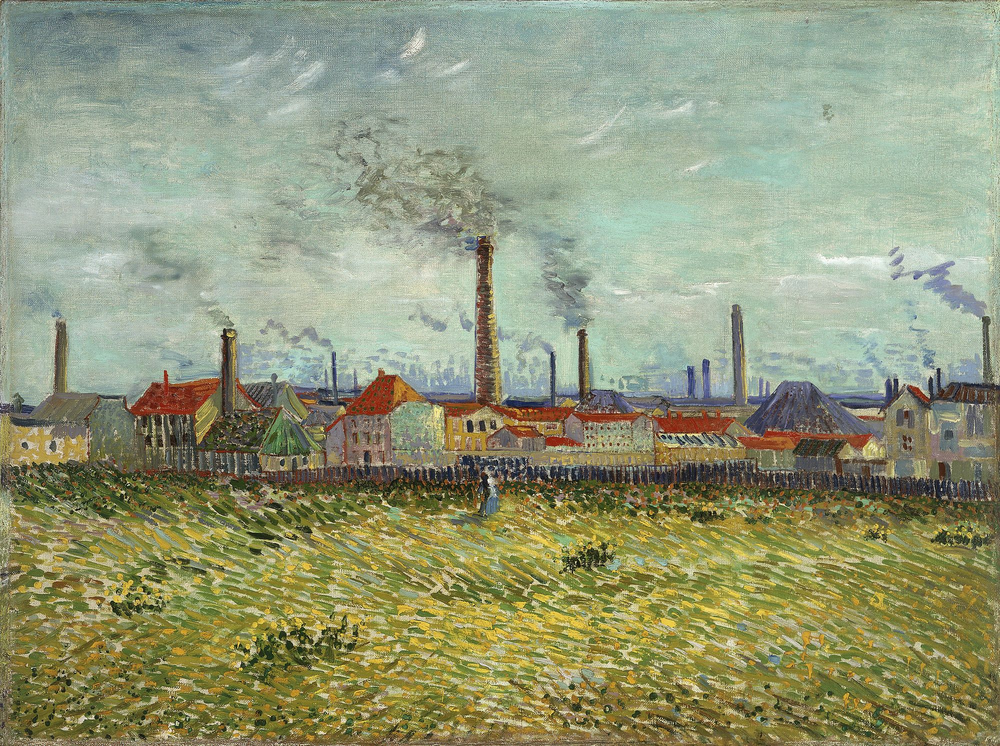

Societal Impacts Research on AI
Studying the societal impacts of advanced AI, before and after AGI
Express interest in the fellowshipPeople from 60+ universities and organizations have expressed interest in SIRA
- University of Chicago
- Stanford
- Yale
- Princeton
- Columbia
- UC Berkeley
- Cornell
- University of Cambridge
- LSE
- UCL
- University of Toronto
- Johns Hopkins
- Carnegie Mellon
- Georgetown
- University of Michigan
- NYU
- UCLA
- McGill
- University of Edinburgh
- University of Amsterdam
- Erasmus University Rotterdam
- Hertie School
- University of Copenhagen
- TU Munich
- University of Hong Kong
- IIT Madras
- UT Austin
- Georgia Tech
- University of Washington
- Tufts
- Boston University
- Brandeis
- Purdue
- UNC Chapel Hill
- UC Irvine
- UIUC
- University of Pittsburgh
- UBC
- University of Bristol
- University of Manchester
- Stockholm School of Economics
- Central European University
- University of Graz
- Saarland University
- Masaryk University
- VU Amsterdam
- Amsterdam University of Applied Sciences
- The Open University
- FernUniversität in Hagen
- Stellenbosch University
- University of Port Harcourt
- University of Buenos Aires
- Universidad de los Andes
- Universidad Nacional de Córdoba
- UNSAM
- Universidad Favaloro
- VNU Hanoi
- University of Victoria
- Rollins College
- OECD
- The Alan Turing Institute
- Max Planck Institute for Human Development
- Meta
- SPAR
SIRA’s mission is to discover and publish evidence about the societal impacts of advanced AI systems, the associated risks, and the effectiveness of present and future interventions, so humanity can navigate the transition to AGI and thrive in the world that follows.
What we do
SIRA studies the societal impacts of advanced AI systems to understand whether society is prepared for the transition to AGI and the world that follows. We publish research on AI’s present and future effects and risk assessments so that the public, governments, and companies can make informed decisions. More about SIRA
What we study
How AI is changing the foundations of society: how people work and earn, how they form beliefs and make decisions, how institutions govern, and how power and wealth are distributed. We study effects already underway and project them forward to the transition to AGI and beyond, asking which social structures are likely to bend, which might break, and what would help them adapt.
Research fellowship
Our core program brings exceptional researchers from any discipline, from undergraduates to senior academics, into this work, pairing them with mentors who already study these questions.
In-house research
As SIRA grows, we are building an in-house research team to lead our assessments and pursue the questions we judge most urgent. Together with our fellows, they build an evidence base the public, governments, and companies can use to prepare for what comes next. Express interest here
Research Fellowship
A 12-week mentored research program on the societal impacts of advanced AI
- 12 weeks
- Full-time, mentored research
- ~ 20
- Fellows in the first cohort
- 2 streams
- AI safety and AI resilience
- Funded
- Stipend, housing, travel, and research support
Fellows study AI’s present and future effects on society. We expect most fellows to come from the social, behavioral, and brain sciences, though we welcome applicants from any field. Each fellow works with a mentor or advisor, a research manager, and an in-person cohort, and finishes with a completed project and a public presentation.
Get involved
Fellows
Exceptional researchers from any discipline and career stage who want to study AI’s societal impacts.
Express interest →Mentors
Researchers already studying AI’s effects on society, in academia, industry, or government.
Offer to mentor →Host organizations
Fellowships or co-working spaces that could host SIRA as a research stream or standalone program.
Email us →Funders
Funders interested in supporting a pilot cohort. See the evidence for why this work matters.
Email us →FAQ
Is SIRA running yet?
Not yet. SIRA is a proposal, and we are currently gathering feedback, mentors, partners, and funding. We are targeting a first cohort in Summer 2027. You can read the full proposal and leave feedback in the comments.
What kind of research does SIRA support?
Empirical and theoretical research on how advanced AI affects people, institutions, and society, now and after AGI. That includes experiments, surveys, interviews, ethnography, and quantitative modeling, as well as formal models, conceptual analysis, and theory building. It treats AI as part of larger social and technical systems, which makes it distinct from technical alignment work on one side and from regulatory policy design on the other. The evidence page collects more than 250 examples.
How is this different from a policy or governance fellowship?
SIRA is a research organization, not a policy fellowship. Policy and governance research asks “what rules should govern this?”: it designs regulation, evaluates compliance, and advises decision-makers. SIRA asks “what is actually happening, and why?”: it studies how people and institutions reason about, trust, use, and are changed by AI in practice. The same topic can be approached either way:
- PolicyWhat disclosure rules should apply to AI-generated political messages?Social scienceHow much do AI-written messages actually shift people’s views, and who is most persuadable?
- PolicyWho should be liable when AI advice causes harm?Social scienceWhen do people over-trust AI advice, and what makes them check it?
- PolicyHow should AI labs be required to report safety incidents?Social scienceHow do people inside AI labs decide what counts as an incident worth reporting?
There is a middle ground where the two meet, and social science findings often inform policy. But SIRA projects start from a social science question, whether answered with data or with theory, not from a regulation to design. Many fellowships already support policy and governance research; very few support this.
What if I work in a different field? Can I still apply?
Yes. We welcome applicants from any field. We expect most fellows to come from the social, behavioral, and brain sciences, such as psychology, cognitive science, neuroscience, economics, and sociology. If you are a researcher in another discipline, such as law, philosophy, history, public health, or computer science, and you have a strong question about AI’s effects on society, we encourage you to apply.
How is SIRA funded?
We are currently raising funding for a first fellowship cohort. If you are a funder interested in supporting it, email contact@sira-project.org.
How can I give feedback on SIRA?
Comment on the proposal on LessWrong or email contact@sira-project.org. We are actively looking for critique.
How can I stay updated?
Fill out an interest form and follow SIRA on LinkedIn.